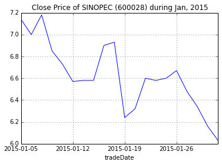

量化分析师的Python日记【第6天：数据处理的瑞士军刀pandas下篇
第二篇：快速进阶
在上一篇中我们介绍了如何创建并访问pandas的Series和DataFrame型的数据，本篇将介绍如何对pandas数据进行操作，掌握这些操作之后，基本可以处理大多数的数据了。首先，导入本篇中使用到的模块：
import numpy as np
import pandas as pd
from pandas import Series, DataFrame
为了看数据方便一些，我们设置一下输出屏幕的宽度
pd.set_option('display.width', 200)
一、数据创建的其他方式
数据结构的创建不止是上篇中介绍的标准形式，本篇再介绍几种。例如，我们可以创建一个以日期为元素的Series：
dates = pd.date_range('20150101', periods=5)
print dates
<class 'pandas.tseries.index.DatetimeIndex'>
[2015-01-01, ..., 2015-01-05]
Length: 5, Freq: D, Timezone: None
将这个日期Series作为索引赋给一个DataFrame：
df = pd.DataFrame(np.random.randn(5, 4),index=dates,columns=list('ABCD'))
print df
A B C D
2015-01-01 -0.168870 0.191945 -0.906788 -1.295211
2015-01-02 -0.985849 0.312378 -1.513870 -0.876869
2015-01-03 -0.241945 1.437763 0.209494 0.061032
2015-01-04 0.139199 0.124118 -0.204801 -1.745327
2015-01-05 0.243644 -0.373126 0.333583 2.640955
只要是能转换成Series的对象，都可以用于创建DataFrame：
df2 = pd.DataFrame({ 'A' : 1., 'B': pd.Timestamp('20150214'), 'C': pd.Series(1.6,index=list(range(4)),dtype='float64'), 'D' : np.array([4] * 4, dtype='int64'), 'E' : 'hello pandas!' })
print df2
A B C D E
0 1 2015-02-14 1.6 4 hello pandas!
1 1 2015-02-14 1.6 4 hello pandas!
2 1 2015-02-14 1.6 4 hello pandas!
3 1 2015-02-14 1.6 4 hello pandas!
二、数据的查看
在多数情况下，数据并不由分析数据的人员生成，而是通过数据接口、外部文件或者其他方式获取。这里我们通过量化实验室的数据接口获取一份数据作为示例：
stock_list = ['000001.XSHE', '000002.XSHE', '000568.XSHE', '000625.XSHE', '000768.XSHE', '600028.XSHG', '600030.XSHG', '601111.XSHG', '601390.XSHG', '601998.XSHG']
raw_data = DataAPI.MktEqudGet(secID=stock_list, beginDate='20150101', endDate='20150131', pandas='1')
df = raw_data[['secID', 'tradeDate', 'secShortName', 'openPrice', 'highestPrice', 'lowestPrice', 'closePrice', 'turnoverVol']]
以上代码获取了2015年一月份全部的交易日内十支股票的日行情信息，首先我们来看一下数据的大小：
print df.shape
(200, 8)
我们可以看到有200行，表示我们获取到了200条记录，每条记录有8个字段，现在预览一下数据，dataframe.head()和dataframe.tail()可以查看数据的头五行和尾五行，若需要改变行数，可在括号内指定：
print "Head of this DataFrame:"
print df.head()
print "Tail of this DataFrame:"
print df.tail(3)
Head of this DataFrame:
secID tradeDate secShortName openPrice highestPrice lowestPrice closePrice turnoverVol
0 000001.XSHE 2015-01-05 平安银行 15.99 16.28 15.60 16.02 286043643
1 000001.XSHE 2015-01-06 平安银行 15.85 16.39 15.55 15.78 216642140
2 000001.XSHE 2015-01-07 平安银行 15.56 15.83 15.30 15.48 170012067
3 000001.XSHE 2015-01-08 平安银行 15.50 15.57 14.90 14.96 140771421
4 000001.XSHE 2015-01-09 平安银行 14.90 15.87 14.71 15.08 250850023
Tail of this DataFrame:
secID tradeDate secShortName openPrice highestPrice lowestPrice closePrice turnoverVol
197 601998.XSHG 2015-01-28 中信银行 7.04 7.32 6.95 7.15 163146128
198 601998.XSHG 2015-01-29 中信银行 6.97 7.05 6.90 7.01 93003445
199 601998.XSHG 2015-01-30 中信银行 7.10 7.14 6.92 6.95 68146718
dataframe.describe()提供了DataFrame中纯数值数据的统计信息：
print df.describe()
openPrice highestPrice lowestPrice closePrice turnoverVol
count 200.00000 200.000000 200.00000 200.000000 2.000000e+02
mean 15.17095 15.634000 14.86545 15.242750 2.384811e+08
std 7.72807 7.997345 7.56136 7.772184 2.330510e+08
min 6.14000 6.170000 6.02000 6.030000 1.242183e+07
25% 8.09500 8.250000 7.98750 8.127500 7.357002e+07
50% 13.96000 14.335000 13.75500 13.925000 1.554569e+08
75% 19.95000 20.500000 19.46250 20.012500 3.358617e+08
max 36.40000 37.250000 34.68000 36.150000 1.310855e+09
对数据的排序将便利我们观察数据，DataFrame提供了两种形式的排序。一种是按行列排序，即按照索引（行名）或者列名进行排序，可调用dataframe.sort_index，指定axis=0表示按索引（行名）排序，axis=1表示按列名排序，并可指定升序或者降序：
print "Order by column names, descending:"
print df.sort_index(axis=1, ascending=False).head()
Order by column names, descending:
turnoverVol tradeDate secShortName secID openPrice lowestPrice highestPrice closePrice
0 286043643 2015-01-05 平安银行 000001.XSHE 15.99 15.60 16.28 16.02
1 216642140 2015-01-06 平安银行 000001.XSHE 15.85 15.55 16.39 15.78
2 170012067 2015-01-07 平安银行 000001.XSHE 15.56 15.30 15.83 15.48
3 140771421 2015-01-08 平安银行 000001.XSHE 15.50 14.90 15.57 14.96
4 250850023 2015-01-09 平安银行 000001.XSHE 14.90 14.71 15.87 15.08
第二种排序是按值排序，可指定列名和排序方式，默认的是升序排序：
print "Order by column value, ascending:"
print df.sort(columns='tradeDate').head()
print "Order by multiple columns value:"
df = df.sort(columns=['tradeDate', 'secID'], ascending=[False, True])
print df.head()
Order by column value, ascending:
secID tradeDate secShortName openPrice highestPrice lowestPrice closePrice turnoverVol
0 000001.XSHE 2015-01-05 平安银行 15.99 16.28 15.60 16.02 286043643
20 000002.XSHE 2015-01-05 万科A 14.39 15.29 14.22 14.91 656083570
40 000568.XSHE 2015-01-05 泸州老窖 20.50 21.99 20.32 21.90 59304755
60 000625.XSHE 2015-01-05 长安汽车 16.40 18.07 16.32 18.07 82087982
80 000768.XSHE 2015-01-05 中航飞机 18.76 19.88 18.41 19.33 84199357
Order by multiple columns value:
secID tradeDate secShortName openPrice highestPrice lowestPrice closePrice turnoverVol
19 000001.XSHE 2015-01-30 平安银行 13.93 14.12 13.76 13.93 93011669
39 000002.XSHE 2015-01-30 万科A 13.09 13.49 12.80 13.12 209624706
59 000568.XSHE 2015-01-30 泸州老窖 19.15 19.51 19.11 19.12 14177179
79 000625.XSHE 2015-01-30 长安汽车 19.16 19.45 18.92 19.18 21233495
99 000768.XSHE 2015-01-30 中航飞机 25.38 25.65 24.28 24.60 59550293
三、数据的访问和操作
3.1 再谈数据的访问
上篇中已经介绍了使用loc、iloc、at、iat、ix以及[]访问DataFrame数据的几种方式，这里再介绍一种方法，使用:来获取部行或者全部列：
print df.iloc[1:4][:]
secID tradeDate secShortName openPrice highestPrice lowestPrice closePrice turnoverVol
39 000002.XSHE 2015-01-30 万科A 13.09 13.49 12.80 13.12 209624706
59 000568.XSHE 2015-01-30 泸州老窖 19.15 19.51 19.11 19.12 14177179
79 000625.XSHE 2015-01-30 长安汽车 19.16 19.45 18.92 19.18 21233495
我们可以扩展上篇介绍的使用布尔类型的向量获取数据的方法，可以很方便地过滤数据，例如，我们要选出收盘价在均值以上的数据：
print df[df.closePrice > df.closePrice.mean()].head()
secID tradeDate secShortName openPrice highestPrice lowestPrice closePrice turnoverVol
59 000568.XSHE 2015-01-30 泸州老窖 19.15 19.51 19.11 19.12 14177179
79 000625.XSHE 2015-01-30 长安汽车 19.16 19.45 18.92 19.18 21233495
99 000768.XSHE 2015-01-30 中航飞机 25.38 25.65 24.28 24.60 59550293
139 600030.XSHG 2015-01-30 中信证券 28.50 28.72 27.78 27.86 304218245
58 000568.XSHE 2015-01-29 泸州老窖 19.04 19.23 19.00 19.15 12421826
isin()函数可方便地过滤DataFrame中的数据：
print df[df['secID'].isin(['601628.XSHG', '000001.XSHE', '600030.XSHG'])].head()
print df.shape
secID tradeDate secShortName openPrice highestPrice lowestPrice closePrice turnoverVol
19 000001.XSHE 2015-01-30 平安银行 13.93 14.12 13.76 13.93 93011669
139 600030.XSHG 2015-01-30 中信证券 28.50 28.72 27.78 27.86 304218245
18 000001.XSHE 2015-01-29 平安银行 13.82 14.01 13.75 13.90 101675329
138 600030.XSHG 2015-01-29 中信证券 28.10 28.58 27.81 28.18 386310957
17 000001.XSHE 2015-01-28 平安银行 13.87 14.30 13.80 14.06 124087755
(200, 8)
3.2 处理缺失数据
在访问数据的基础上，我们可以更改数据，例如，修改某些元素为缺失值：
df['openPrice'][df['secID'] == '000001.XSHE'] = np.nan
df['highestPrice'][df['secID'] == '601111.XSHG'] = np.nan
df['lowestPrice'][df['secID'] == '601111.XSHG'] = np.nan
df['closePrice'][df['secID'] == '000002.XSHE'] = np.nan
df['turnoverVol'][df['secID'] == '601111.XSHG'] = np.nan
print df.head(10)
secID tradeDate secShortName openPrice highestPrice lowestPrice closePrice turnoverVol
19 000001.XSHE 2015-01-30 平安银行 NaN 14.12 13.76 13.93 93011669
39 000002.XSHE 2015-01-30 万科A 13.09 13.49 12.80 NaN 209624706
59 000568.XSHE 2015-01-30 泸州老窖 19.15 19.51 19.11 19.12 14177179
79 000625.XSHE 2015-01-30 长安汽车 19.16 19.45 18.92 19.18 21233495
99 000768.XSHE 2015-01-30 中航飞机 25.38 25.65 24.28 24.60 59550293
119 600028.XSHG 2015-01-30 中国石化 6.14 6.17 6.02 6.03 502445638
139 600030.XSHG 2015-01-30 中信证券 28.50 28.72 27.78 27.86 304218245
159 601111.XSHG 2015-01-30 中国国航 7.92 NaN NaN 7.69 NaN
179 601390.XSHG 2015-01-30 中国中铁 8.69 8.69 8.12 8.14 352357431
199 601998.XSHG 2015-01-30 中信银行 7.10 7.14 6.92 6.95 68146718
原始数据的中很可能存在一些数据的缺失，就如同现在处理的这个样例数据一样，处理缺失数据有多种方式。通常使用dataframe.dropna()，dataframe.dropna()可以按行丢弃带有nan的数据；若指定how='all'（默认是'any'），则只在整行全部是nan时丢弃数据；若指定thresh，则表示当某行数据非缺失列数超过指定数值时才保留；要指定根据某列丢弃可以通过subset完成。
print "Data size before filtering:"
print df.shape
print "Drop all rows that have any NaN values:"
print "Data size after filtering:"
print df.dropna().shape
print df.dropna().head(10)
print "Drop only if all columns are NaN:"
print "Data size after filtering:"
print df.dropna(how='all').shape
print df.dropna(how='all').head(10)
print "Drop rows who do not have at least six values that are not NaN"
print "Data size after filtering:"
print df.dropna(thresh=6).shape
print df.dropna(thresh=6).head(10)
print "Drop only if NaN in specific column:"
print "Data size after filtering:"
print df.dropna(subset=['closePrice']).shape
print df.dropna(subset=['closePrice']).head(10)
Data size before filtering:
(200, 8)
Drop all rows that have any NaN values:
Data size after filtering:
(140, 8)
secID tradeDate secShortName openPrice highestPrice lowestPrice closePrice turnoverVol
59 000568.XSHE 2015-01-30 泸州老窖 19.15 19.51 19.11 19.12 14177179
79 000625.XSHE 2015-01-30 长安汽车 19.16 19.45 18.92 19.18 21233495
99 000768.XSHE 2015-01-30 中航飞机 25.38 25.65 24.28 24.60 59550293
119 600028.XSHG 2015-01-30 中国石化 6.14 6.17 6.02 6.03 502445638
139 600030.XSHG 2015-01-30 中信证券 28.50 28.72 27.78 27.86 304218245
179 601390.XSHG 2015-01-30 中国中铁 8.69 8.69 8.12 8.14 352357431
199 601998.XSHG 2015-01-30 中信银行 7.10 7.14 6.92 6.95 68146718
58 000568.XSHE 2015-01-29 泸州老窖 19.04 19.23 19.00 19.15 12421826
78 000625.XSHE 2015-01-29 长安汽车 19.60 19.64 18.90 19.24 25546060
98 000768.XSHE 2015-01-29 中航飞机 24.65 25.63 24.53 24.98 67095945
Drop only if all columns are NaN:
Data size after filtering:
(200, 8)
secID tradeDate secShortName openPrice highestPrice lowestPrice closePrice turnoverVol
19 000001.XSHE 2015-01-30 平安银行 NaN 14.12 13.76 13.93 93011669
39 000002.XSHE 2015-01-30 万科A 13.09 13.49 12.80 NaN 209624706
59 000568.XSHE 2015-01-30 泸州老窖 19.15 19.51 19.11 19.12 14177179
79 000625.XSHE 2015-01-30 长安汽车 19.16 19.45 18.92 19.18 21233495
99 000768.XSHE 2015-01-30 中航飞机 25.38 25.65 24.28 24.60 59550293
119 600028.XSHG 2015-01-30 中国石化 6.14 6.17 6.02 6.03 502445638
139 600030.XSHG 2015-01-30 中信证券 28.50 28.72 27.78 27.86 304218245
159 601111.XSHG 2015-01-30 中国国航 7.92 NaN NaN 7.69 NaN
179 601390.XSHG 2015-01-30 中国中铁 8.69 8.69 8.12 8.14 352357431
199 601998.XSHG 2015-01-30 中信银行 7.10 7.14 6.92 6.95 68146718
Drop rows who do not have at least six values that are not NaN
Data size after filtering:
(180, 8)
secID tradeDate secShortName openPrice highestPrice lowestPrice closePrice turnoverVol
19 000001.XSHE 2015-01-30 平安银行 NaN 14.12 13.76 13.93 93011669
39 000002.XSHE 2015-01-30 万科A 13.09 13.49 12.80 NaN 209624706
59 000568.XSHE 2015-01-30 泸州老窖 19.15 19.51 19.11 19.12 14177179
79 000625.XSHE 2015-01-30 长安汽车 19.16 19.45 18.92 19.18 21233495
99 000768.XSHE 2015-01-30 中航飞机 25.38 25.65 24.28 24.60 59550293
119 600028.XSHG 2015-01-30 中国石化 6.14 6.17 6.02 6.03 502445638
139 600030.XSHG 2015-01-30 中信证券 28.50 28.72 27.78 27.86 304218245
179 601390.XSHG 2015-01-30 中国中铁 8.69 8.69 8.12 8.14 352357431
199 601998.XSHG 2015-01-30 中信银行 7.10 7.14 6.92 6.95 68146718
18 000001.XSHE 2015-01-29 平安银行 NaN 14.01 13.75 13.90 101675329
Drop only if NaN in specific column:
Data size after filtering:
(180, 8)
secID tradeDate secShortName openPrice highestPrice lowestPrice closePrice turnoverVol
19 000001.XSHE 2015-01-30 平安银行 NaN 14.12 13.76 13.93 93011669
59 000568.XSHE 2015-01-30 泸州老窖 19.15 19.51 19.11 19.12 14177179
79 000625.XSHE 2015-01-30 长安汽车 19.16 19.45 18.92 19.18 21233495
99 000768.XSHE 2015-01-30 中航飞机 25.38 25.65 24.28 24.60 59550293
119 600028.XSHG 2015-01-30 中国石化 6.14 6.17 6.02 6.03 502445638
139 600030.XSHG 2015-01-30 中信证券 28.50 28.72 27.78 27.86 304218245
159 601111.XSHG 2015-01-30 中国国航 7.92 NaN NaN 7.69 NaN
179 601390.XSHG 2015-01-30 中国中铁 8.69 8.69 8.12 8.14 352357431
199 601998.XSHG 2015-01-30 中信银行 7.10 7.14 6.92 6.95 68146718
18 000001.XSHE 2015-01-29 平安银行 NaN 14.01 13.75 13.90 101675329
有数据缺失时也未必是全部丢弃，dataframe.fillna(value=value)可以指定填补缺失值的数值
print df.fillna(value=20150101).head()
secID tradeDate secShortName openPrice highestPrice lowestPrice closePrice turnoverVol
19 000001.XSHE 2015-01-30 平安银行 20150101.00 14.12 13.76 13.93 93011669
39 000002.XSHE 2015-01-30 万科A 13.09 13.49 12.80 20150101.00 209624706
59 000568.XSHE 2015-01-30 泸州老窖 19.15 19.51 19.11 19.12 14177179
79 000625.XSHE 2015-01-30 长安汽车 19.16 19.45 18.92 19.18 21233495
99 000768.XSHE 2015-01-30 中航飞机 25.38 25.65 24.28 24.60 59550293
3.3 数据操作
Series和DataFrame的类函数提供了一些函数，如mean()、sum()等，指定0按列进行，指定1按行进行：
df = raw_data[['secID', 'tradeDate', 'secShortName', 'openPrice', 'highestPrice', 'lowestPrice', 'closePrice', 'turnoverVol']]
print df.mean(0)
openPrice 1.517095e+01
highestPrice 1.563400e+01
lowestPrice 1.486545e+01
closePrice 1.524275e+01
turnoverVol 2.384811e+08
dtype: float64
value_counts函数可以方便地统计频数：
print df['closePrice'].value_counts().head()
6.58 3
13.12 2
9.13 2
8.58 2
6.93 2
dtype: int64
在panda中，Series可以调用map函数来对每个元素应用一个函数，DataFrame可以调用apply函数对每一列（行）应用一个函数，applymap对每个元素应用一个函数。这里面的函数可以是用户自定义的一个lambda函数，也可以是已有的其他函数。下例展示了将收盘价调整到[0, 1]区间：
print df[['closePrice']].apply(lambda x: (x - x.min()) / (x.max() - x.min())).head()
closePrice
0 0.331673
1 0.323705
2 0.313745
3 0.296481
4 0.300465
使用append可以在Series后添加元素，以及在DataFrame尾部添加一行：
dat1 = df[['secID', 'tradeDate', 'closePrice']].head()
dat2 = df[['secID', 'tradeDate', 'closePrice']].iloc[2]
print "Before appending:"
print dat1
dat = dat1.append(dat2, ignore_index=True)
print "After appending:"
print dat
Before appending:
secID tradeDate closePrice
0 000001.XSHE 2015-01-05 16.02
1 000001.XSHE 2015-01-06 15.78
2 000001.XSHE 2015-01-07 15.48
3 000001.XSHE 2015-01-08 14.96
4 000001.XSHE 2015-01-09 15.08
After appending:
secID tradeDate closePrice
0 000001.XSHE 2015-01-05 16.02
1 000001.XSHE 2015-01-06 15.78
2 000001.XSHE 2015-01-07 15.48
3 000001.XSHE 2015-01-08 14.96
4 000001.XSHE 2015-01-09 15.08
5 000001.XSHE 2015-01-07 15.48
DataFrame可以像在SQL中一样进行合并，在上篇中，我们介绍了使用concat函数创建DataFrame，这就是一种合并的方式。另外一种方式使用merge函数，需要指定依照哪些列进行合并，下例展示了如何根据security ID和交易日合并数据：
dat1 = df[['secID', 'tradeDate', 'closePrice']]
dat2 = df[['secID', 'tradeDate', 'turnoverVol']]
dat = dat1.merge(dat2, on=['secID', 'tradeDate'])
print "The first DataFrame:"
print dat1.head()
print "The second DataFrame:"
print dat2.head()
print "Merged DataFrame:"
print dat.head()
The first DataFrame:
secID tradeDate closePrice
0 000001.XSHE 2015-01-05 16.02
1 000001.XSHE 2015-01-06 15.78
2 000001.XSHE 2015-01-07 15.48
3 000001.XSHE 2015-01-08 14.96
4 000001.XSHE 2015-01-09 15.08
The second DataFrame:
secID tradeDate turnoverVol
0 000001.XSHE 2015-01-05 286043643
1 000001.XSHE 2015-01-06 216642140
2 000001.XSHE 2015-01-07 170012067
3 000001.XSHE 2015-01-08 140771421
4 000001.XSHE 2015-01-09 250850023
Merged DataFrame:
secID tradeDate closePrice turnoverVol
0 000001.XSHE 2015-01-05 16.02 286043643
1 000001.XSHE 2015-01-06 15.78 216642140
2 000001.XSHE 2015-01-07 15.48 170012067
3 000001.XSHE 2015-01-08 14.96 140771421
4 000001.XSHE 2015-01-09 15.08 250850023
DataFrame另一个强大的函数是groupby，可以十分方便地对数据分组处理，我们对2015年一月内十支股票的开盘价，最高价，最低价，收盘价和成交量求平均值：
df_grp = df.groupby('secID')
grp_mean = df_grp.mean()
print grp_mean
openPrice highestPrice lowestPrice closePrice turnoverVol
secID
000001.XSHE 14.6550 14.9840 14.4330 14.6650 154710615
000002.XSHE 13.3815 13.7530 13.0575 13.4100 277459431
000568.XSHE 19.7220 20.1015 19.4990 19.7935 29199107
000625.XSHE 19.4915 20.2275 19.1040 19.7170 42633332
000768.XSHE 22.4345 23.4625 21.8830 22.6905 92781199
600028.XSHG 6.6060 6.7885 6.4715 6.6240 531966632
600030.XSHG 31.1505 32.0825 30.4950 31.2325 611544509
601111.XSHG 8.4320 8.6520 8.2330 8.4505 104143358
601390.XSHG 8.4060 8.6625 8.2005 8.4100 362831455
601998.XSHG 7.4305 7.6260 7.2780 7.4345 177541066
如果希望取每只股票的最新数据，应该怎么操作呢？drop_duplicates可以实现这个功能，首先对数据按日期排序，再按security ID去重：
df2 = df.sort(columns=['secID', 'tradeDate'], ascending=[True, False])
print df2.drop_duplicates(subset='secID')
secID tradeDate secShortName openPrice highestPrice lowestPrice closePrice turnoverVol
19 000001.XSHE 2015-01-30 平安银行 13.93 14.12 13.76 13.93 93011669
39 000002.XSHE 2015-01-30 万科A 13.09 13.49 12.80 13.12 209624706
59 000568.XSHE 2015-01-30 泸州老窖 19.15 19.51 19.11 19.12 14177179
79 000625.XSHE 2015-01-30 长安汽车 19.16 19.45 18.92 19.18 21233495
99 000768.XSHE 2015-01-30 中航飞机 25.38 25.65 24.28 24.60 59550293
119 600028.XSHG 2015-01-30 中国石化 6.14 6.17 6.02 6.03 502445638
139 600030.XSHG 2015-01-30 中信证券 28.50 28.72 27.78 27.86 304218245
159 601111.XSHG 2015-01-30 中国国航 7.92 8.03 7.65 7.69 61877792
179 601390.XSHG 2015-01-30 中国中铁 8.69 8.69 8.12 8.14 352357431
199 601998.XSHG 2015-01-30 中信银行 7.10 7.14 6.92 6.95 68146718
若想要保留最老的数据，可以在降序排列后取最后一个记录，通过指定take_last=True（默认值为False，取第一条记录）可以实现：
print df2.drop_duplicates(subset='secID', take_last=True)
secID tradeDate secShortName openPrice highestPrice lowestPrice closePrice turnoverVol
0 000001.XSHE 2015-01-05 平安银行 15.99 16.28 15.60 16.02 286043643
20 000002.XSHE 2015-01-05 万科A 14.39 15.29 14.22 14.91 656083570
40 000568.XSHE 2015-01-05 泸州老窖 20.50 21.99 20.32 21.90 59304755
60 000625.XSHE 2015-01-05 长安汽车 16.40 18.07 16.32 18.07 82087982
80 000768.XSHE 2015-01-05 中航飞机 18.76 19.88 18.41 19.33 84199357
100 600028.XSHG 2015-01-05 中国石化 6.59 7.14 6.45 7.14 1186499645
120 600030.XSHG 2015-01-05 中信证券 33.90 35.25 33.01 34.66 698627215
140 601111.XSHG 2015-01-05 中国国航 7.98 8.62 7.98 8.62 231611758
160 601390.XSHG 2015-01-05 中国中铁 9.37 9.37 8.90 9.13 469902172
180 601998.XSHG 2015-01-05 中信银行 8.15 8.33 7.91 8.16 337368242
四、数据可视化
pandas数据直接可以绘图查看，下例中我们采用中国石化一月的收盘价进行绘图，其中set_index('tradeDate')['closePrice']表示将DataFrame的'tradeDate'这一列作为索引，将'closePrice'这一列作为Series的值，返回一个Series对象，随后调用plot函数绘图，更多的参数可以在matplotlib的文档中查看。
dat = df[df['secID'] == '600028.XSHG'].set_index('tradeDate')['closePrice']
dat.plot(title="Close Price of SINOPEC (600028) during Jan, 2015")
<matplotlib.axes.AxesSubplot at 0x49b6510>
